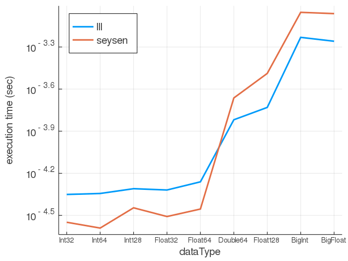

LLLplus README
LLLplus provides lattice tools such as Lenstra-Lenstra-Lovász (LLL) lattice reduction which are of practical and theoretical use in cryptography, digital communication, integer programming, and more. This package is experimental and not a robust tool; use at your own risk :-)
LLLplus has functions for LLL, Seysen, and Hermite-Korkine-Zolotarev lattice reduction techniques. Brun integer relations is included in the form of lattice reduction. Solvers for the shortest vector and the closest vector problems are also included; for more see the help text for the lll, seysen, hkz, brun, svp, and cvp functions. Several toy (demo) functions are also included; see the subsetsum, minimalpolynomial, integerfeasibility, rationalapprox, and spigotBBP functions.
Examples
Each function contains documentation and examples available via Julia's built-in documentation system (try ?lll or @doc(lll)). Documentation for all functions is available. A tutorial notebook is found in the docs directory or on nbviewer.
Here are a few examples of using the functions in the package on random lattices.
Pkg.add("LLLplus")
using LLLplus
# do lattice reduction on a matrix with randn entries
N = 40;
H = randn(N,N);
B,T = brun(H);
B,T = lll(H);
B,T = seysen(H);
B,T = hkz(H);
# check out the CVP solver
Q,Rtmp=qr(H); R = UpperTriangular(Rtmp);
u=Int.(rand(0:1e10,N));
y=H*u+rand(N)/100;
uhat=cvp(Q'*y,R);
sum(abs.(u-uhat))Execution Time results
In the first test we compare several LLL functions: the lll function from LLLplus, the l2avx function in the src\l2.jl file in LLLplus, the lll_with_transform function from Nemo (which uses FLINT), and the lll_reduction function from fplll. Nemo is written by number theorists, while fplll is written by lattice cryptanalysis academics; they are good benchmarks against which to compare. We first show how the execution time varies as the basis (matrix) size varies over [4 8 16 32 64]. For each matrix size, 20 random bases are generated using fplll's gen_qary function with depth of 25 bits, with the average execution time shown; the eltype is Int64 except for NEMO, which uses GMP (its own BigInt); in all cases the δ=.99. The vertical axis shows execution time on a logarithmic scale; the x-axis is also logarithmic. The generally linear nature of the LLL curves supports the polynomial-time nature of the algorithm. The LLLplus.lll function is slower, while l2avx is similar to fplll. Though not shown, using bases from gen_qary with bit depth of 45 gives fplll a larger advantage. This figure was generated using code in test/timeLLLs.jl.

One additional question that could arise when looking at the plot above is what the quality of the basis is. In the next plot we show execution time vs the norm of the first vector in the reduced basis, this first vector is typically the smallest; its norm is an rough indication of the quality of the reduced basis. We show results averaged over 20 random bases from gen_qary with depth 25 bits, this time with the dimension fixed at 32. The curve is created by varying the δ parameter from .29 to .99 in steps of .2; the larger times and smaller norms correspond to the largest δ values. Though the l2avx function is competitive with fplll in this case, in most cases the fplll code is faster.

Finally, we show execution time for several built-in datatypes (Int32, Int64, Int128, Float32, Float64, BitInt, and BigFloat) as well as type from external packages (Float128 from Quadmath.jl and Double64 from DoubleFloat.jl) which are used to generate 60 16x16 matrices, over which execution time for the lattice reduction techniques is averaged. The vertical axis is a logarithmic representation of execution time as in the previous figure. This figure was generated using code in test/perftest.jl.

Notes
The 2020 Simons Institute lattice workshop, a survey paper by Wuebben, and the monograph by Bremner were helpful in writing the tools in LLLplus and are good resources for further study. If you are trying to break one of the Lattice Challenge records or are looking for robust, well-proven lattice tools, look at fplll. Also, for many number-theoretic problems the Nemo.jl package is appropriate; it uses the FLINT C library to do LLL reduction on Nemo-specific data types. Finally, no number theorists have worked on LLLplus; please treat the package as experimental.